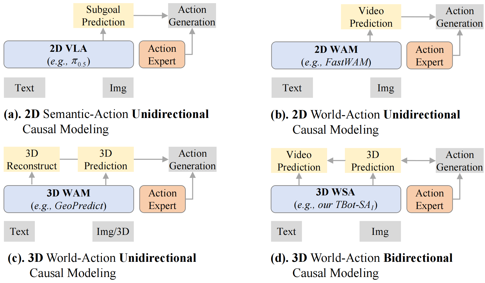
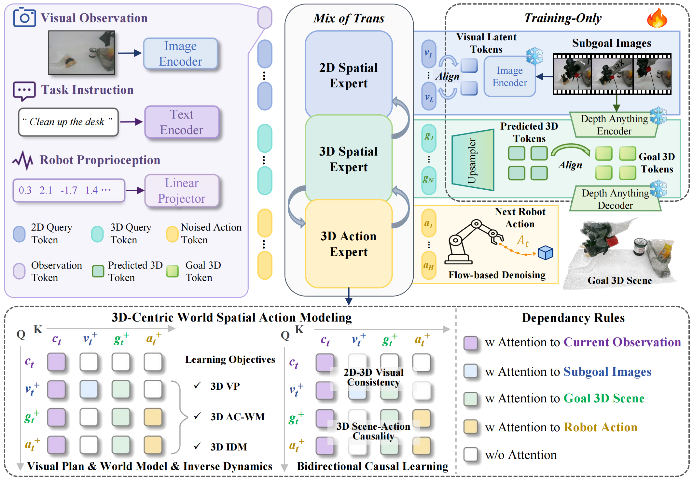
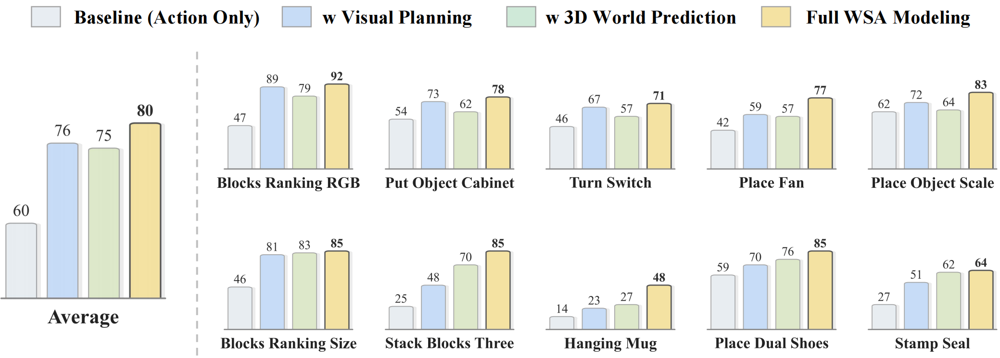
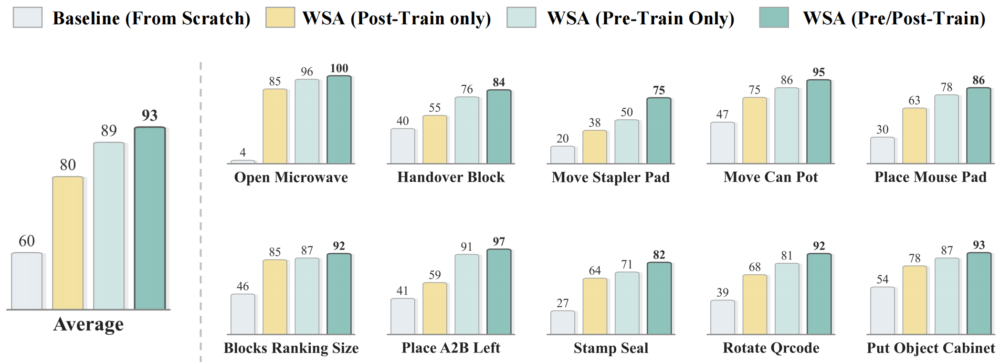
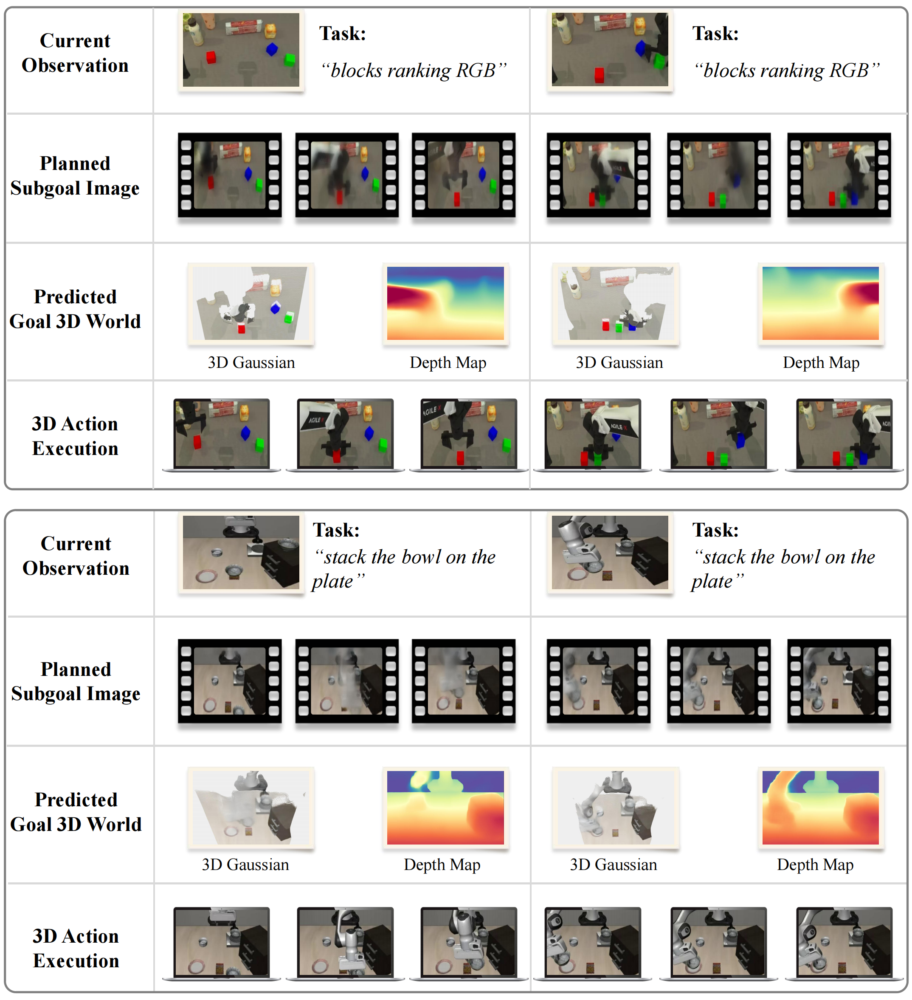

WSA objective
The future 3D scene becomes an explicit prediction target, so the policy learns the spatial state the robot should bring into existence.
Abstract
Current VLA and WAM policies are strong at mapping language and images to actions, but their prediction targets are still mostly 2D. TBot-SA1 reframes robot control as World-Spatial-Action modeling: the policy predicts visual subgoals, latent 3D goal worlds, and continuous action chunks inside one coupled model.
The key idea is simple: actions should not only match the current image, but also realize a physically meaningful 3D future state. This lets the model learn the causal loop between spatial change and robot motion instead of treating action generation as the last token in a visual pipeline.
Paradigm
VLA models learn semantic-to-action mappings. WAMs add future visual prediction. WSA adds the missing 3D state: the policy reasons about the world it should make, then generates actions to realize it.
VLA At ~ p(At | Ot)
WAM (V+t, At) ~ p(· | Ot)
WSA (V+t, G+t, At) ~ p(· | Ot)

Method & Contributions
The main contributions are folded into the model design: TBot-SA1 plans a visual subgoal, predicts a latent 3D goal world, and produces continuous actions that reach the intended future state.
The future 3D scene becomes an explicit prediction target, so the policy learns the spatial state the robot should bring into existence.
The 2D Spatial Expert, 3D Spatial Expert, and 3D Action Expert exchange information through structured attention instead of independent heads.
With 6K hours of mixed demonstrations and about 1K hours of real-robot data, the 3B model reaches strong simulation and real-world performance.

Predicts instruction-aligned subgoal image tokens.
Predicts future latent 3D scene representations conditioned on actions.
Denoises continuous action chunks from planned 3D goal states.
Aligns 2D-3D visual consistency and 3D scene-action causality.
Pretraining Data
TBot-SA1 uses simulation, real-robot, and egocentric human demonstrations. The mixture supplies broad task coverage while keeping the amount of expensive real-robot data moderate.
Broad task and visual variation from InternData-A1 and RoboTwin.
Executable manipulation behaviors from AgiBot-World and RoboChallenge.
Egocentric manipulation priors that complement robot-scale collection.
| Data source | Type | Frames | Tasks | Weight |
|---|---|---|---|---|
| InternData-A1 | Simulation | 396M | 70 | 0.64 |
| RoboTwin | Simulation | 17M | 50 | 0.08 |
| AgiBot-World | Real robot | 206M | 217 | 0.18 |
| RoboChallenge | Real robot | 5M | 30 | 0.02 |
| EgoDex | Human | 68M | 194 | 0.08 |
| Total demonstrations | 6,000+ hours |
|---|---|
| Real-robot demonstrations | ~1,000 hours |
| Frame scale | 600M frames |
| Robot embodiments | 8 robots |
| Robot-control tasks | 300+ tasks |
Experiments
The evaluation covers RoboTwin2.0 simulation tasks and seven real-world tabletop manipulation scenarios across AgileX PiPER and ARX Lift2 embodiments.
Average success rate across seven tabletop tasks.
Average task completeness under physical deployment.
Matches or exceeds larger WAM baselines with a 3B policy.
Maintains performance under randomized visual conditions.
| Method | Type | Avg. SR | Avg. C |
|---|---|---|---|
| π0 | VLA 3B | 34% | 36% |
| π0.5 | VLA 3B | 55% | 59% |
| InternVLA-A1 | WAM 3B | 38% | 53% |
| TBot-SA1 | WSA 3B | 77% | 83% |
| Method | Type | Clean SR | Randomized SR |
|---|---|---|---|
| π0.5 | VLA 3B | 83% | 77% |
| InternVLA-A1 | WAM 3B | 89% | 88% |
| Motus | WAM 8B | 89% | 87% |
| FastWAM | WAM 6B | 92% | 92% |
| TBot-SA1 | WSA 3B | 92% | 93% |


Qualitative Analysis
TBot-SA1 produces subgoal images that capture task intent, predicts goal 3D worlds rendered with 3D Gaussian and depth views, and executes trajectories aligned with the predicted spatial goal states.

Videos
The video area is prepared for later demonstrations. Each slot can be replaced by an MP4 or embedded video when the robot rollouts are ready.
Motivation, WSA modeling intuition, and key results.
Clean and randomized benchmark rollouts across bimanual tasks.
AgileX PiPER and ARX Lift2 tabletop manipulation scenarios.
Subgoal images, predicted goal 3D worlds, and action execution side by side.
Paper
The manuscript used by this page is stored at assets/paper/WSA.pdf.
@misc{jiang2026tbotsa1,
title = {TBot-SA1: 2D-3D Latent World Action Modeling for Generalizable Robot Control},
author = {Jiang, Jiahao and Zhang, Jianing and Yin, Zhenhan and Chen, Ruidong and Wang, Sen and Yu, Zhaoshu and Zeng, Pengpeng and Cao, XiaoFeng and Wang, Xuanhan and Song, Jingkuan and Shen, Heng Tao},
year = {2026},
note = {Manuscript}
}